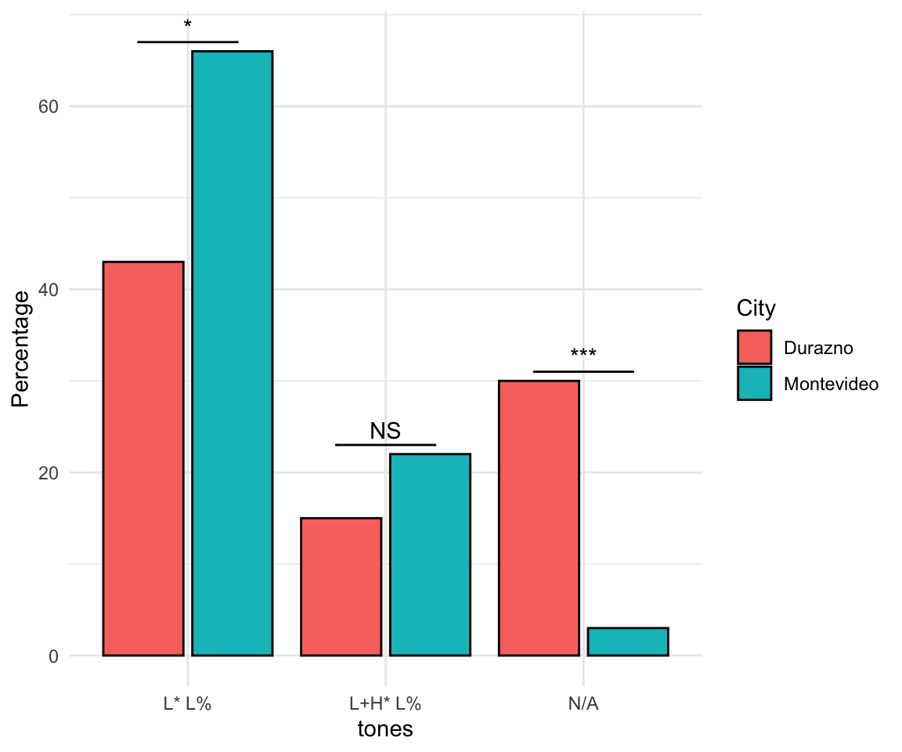
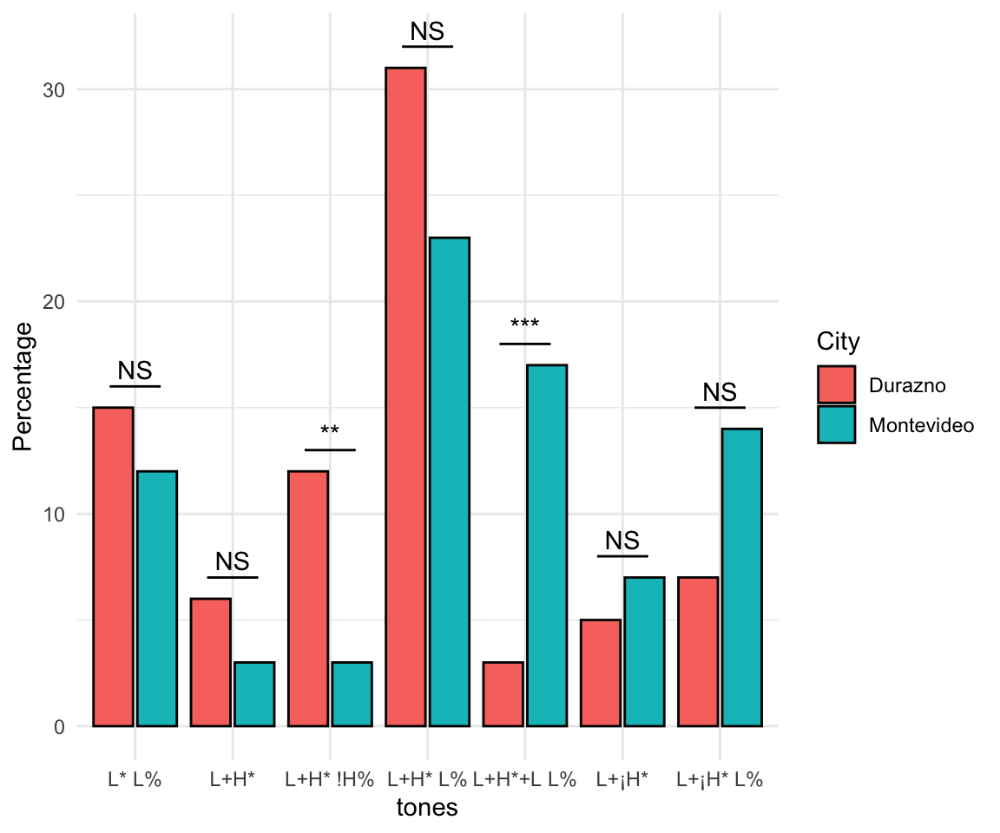

Results Round 2
Plots combining all PN and N overall
These plots show the percentage of each pitch accent by city in nuclear or prenuclear positions in broad and narrow focus declarative statement.
Each comparison was a poisson regression testing whether the count of a given pitch accent different as a function of city for each position (nuclear or prenuclear) and statement type (broad or narrow focus).
Example for in line reporting, looking at the first plot:
In prenuclear broad focus declarative, Montevideo speakers were predicted to produce H* significantly more than Durazno speakers (p < .05).
Recall the the number of asterisks is the number of 0’s when you report:
* <- p < .05
** <- p < .005
*** <- p < .005
Prenuclear Broad Focus Declaratives
Nuclear Broad Focus Declaratives

Prenuclear Narrow Focus Declaratives

Nuclear Narrow Focus Declaratives
Sentence by sentence word by word indvidually (not combined cities)
I created a ton of plots! I am uploading them to folders in the google drive. Each plot is labeled both in file name and on the plot itself. The are all bar graphs showing the total quantity of occurrences of each pitch accent for each word. I can integrate any changes to all plots simultaneously. So if you want different colors, labels etc., let me know. It’s pretty easy to adjust!
Overall
Here is an example of a plot (I made every possible plot). This one is for Broad Focus Declarative sentence 1 for Durazno (bottom right corner). The word is “Mandarinas” and the position is nuclear. The focused items I’ve uploaded in a separate section below. These plots are under “plots/overall”.
Look at sex differences/education/age within city:
Here are example plots of each of these differences, and the name of their folders in the google drive:
Sex
Find these under “plots/sex/
Education
Find these under “plots/education/
Age
Find these under “plots/age/
Here are the focused words in the a narrow focus conditions (overall):
NFD1 - Naranjas
NFD2 - Medialunas
NFD3 - San Juan


NFD 4 - le guste el


NFD5 - con Manuel!